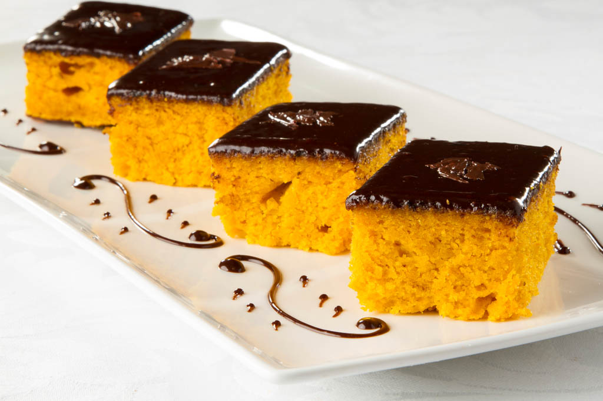

Bolo de Cenoura

Ingredientes:
- 4 ovos
- 150 ml de óleo
- 1 e ½ xícara (chá) de açúcar
- 2 cenouras médias picadas (320 g)
- 2 xícaras (chá) de farinha de trigo peneirada
- 1 colher (sopa) de fermento químico
- 300 g de chocolate ao leite ou meio amargo picado
- 1 caixinha de creme de leite (200 g)
Modo de Preparo:
- No liquidificador, bata os ovos com o óleo, o açúcar e a cenoura até virar um creme.
- Transfira para uma tigela e incorpore aos poucos a farinha e o fermento.
- Despeje em fôrma de cone central untada e enfarinhada.
- Asse em forno médio preaquecido (180 °C) por cerca de 40 minutos ou até dourar. Deixe esfriar.
- Derreta o chocolate com o creme de leite, misture até ficar homogêneo e cubra o bolo com o ganachê.